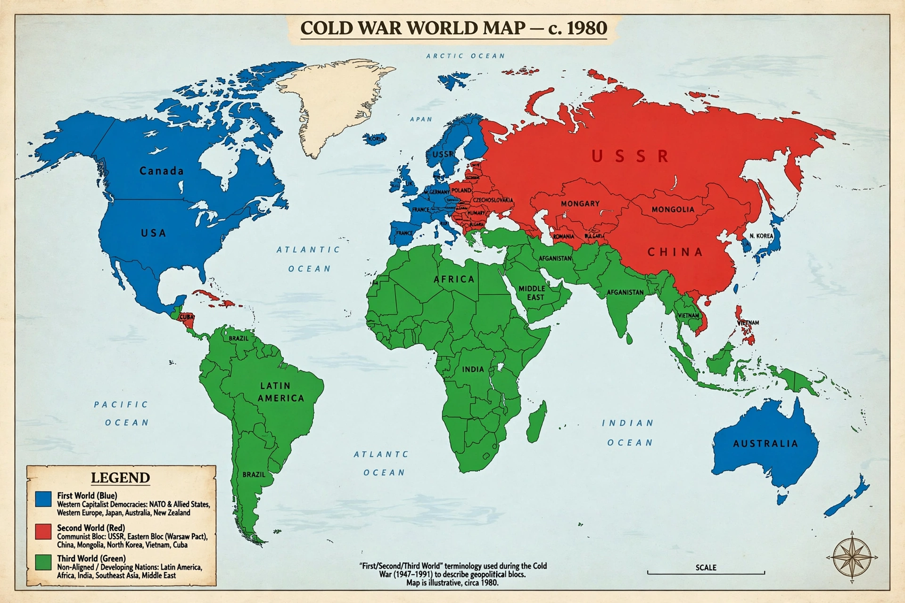

The term "Third World" arose during the Cold War to define countries that remained non-aligned with either NATO or the Warsaw Pact. In the three-world model proposed by French demographer Alfred Sauvy in 1952, the First World comprised the United States and its capitalist allies, the Second World the Soviet Union and its communist allies, and the Third World all other countries — many of them newly decolonized states in Africa, Asia and Latin America, most aligned politically with the Non-Aligned Movement.

| Third World | |
|---|---|
| Coined by | Alfred Sauvy, 1952 |
| Original meaning | States aligned with neither the Western nor the Eastern bloc |
| Associated movement | Non-Aligned Movement |
| Modern equivalents | Developing countries, Global South |
Sauvy coined tiers monde in an article in L'Observateur on 14 August 1952, drawing a deliberate parallel with the Third Estate of the French Revolution: "this Third World, ignored, exploited, despised like the Third Estate, also wants to be something." The Bandung Conference of 1955 and the founding of the Non-Aligned Movement in Belgrade in 1961 gave the grouping political form.
Although the original meaning was geopolitical, "Third World" came to be used as a synonym for poor or developing countries, associated with low industrialization, low Human Development Index scores and economies dependent on the developed world — an association criticized by dependency theorists and by scholars who note the category bundled together states of vastly different wealth. China, for example, long described itself as the largest developing country and leader of the Third World.
With the dissolution of the Soviet Union in 1991, the Second World effectively vanished and the three-world scheme lost its anchor. The term persists in everyday usage but is widely regarded as outdated; analysts more often speak of the "Global South", "developing countries", or income classifications used by the World Bank. The self-designation "Third World" also endures in fields such as Third World Approaches to International Law (TWAIL).
First World · Global South · Non-Aligned Movement · Bandung Conference
From Wikipedia, the free encyclopedia.